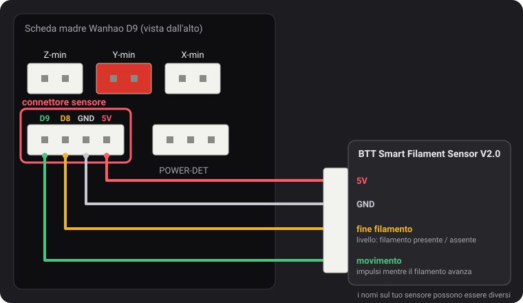
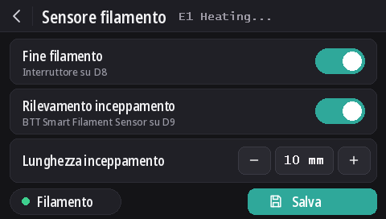

Sensori filamento
Dalla v2.0.5 questi firmware leggono due tipi di sensore: l'interruttore di fine filamento Wanhao e il BTT Smart Filament Sensor V2.0, che si accorge anche quando il filamento smette di muoversi (bobina aggrovigliata, inceppamento, filamento mangiato dall'estrusore). Il rilevamento di fine filamento è attivo di default su ogni modello, mentre il rilevamento di inceppamento è disattivato.
Il connettore del sensore

Il connettore a 4 pin a sinistra di POWER-DET, sotto i connettori dei finecorsa, porta D9, D8, GND e 5V, in quest'ordine. I nomi dei pin vengono da uno schema di cablaggio di Wanhao che dustovich ha trovato e condiviso sul Discord; sul retro della scheda gli stessi quattro pin sono stampati come CTRL, BTN, GND e VCC.
- D8 è l'ingresso di fine filamento letto dal firmware Wanhao.
- D9 non è usato dal firmware Wanhao: queste build ci leggono il segnale di movimento del sensore BTT.
Sullo schermo
Con DGUS Reloaded 2.0 sullo schermo (firmware v2.0.9 o successivo): Impostazioni → Filamento → Sensore filamento.
- Fine filamento attiva o disattiva tutto il rilevamento, come
M412 S1/M412 S0. - Rilevamento inceppamento attiva il rilevamento di inceppamento con la lunghezza indicata sotto, o lo disattiva (
L0). - Lunghezza inceppamento: − e + la cambiano di 1 mm; tocca il numero per digitarla.
- Il pallino Filamento è verde quando l'interruttore di fine filamento vede il filamento, rosso quando non lo vede.
- Le modifiche si applicano subito. Salva le memorizza, come
M500. La freccia indietro esce senza salvare: le impostazioni memorizzate tornano al prossimo avvio.

I comandi M412
Tutto si imposta via USB da un terminale seriale (Pronterface, il terminale del tuo slicer o di OctoPrint,
250000 baud). I parametri si possono combinare in un unico comando, per esempio M412 S1 L10.
| Comando | Cosa fa |
|---|---|
M412 | Mostra lo stato, per esempio Filament runout ON ; Distance 5.00mm ; Motion distance 0.00mm. |
M412 S1 | Attiva il rilevamento: l'interruttore di fine filamento, e anche il rilevamento di inceppamento se la lunghezza di inceppamento non è 0. |
M412 S0 | Disattiva tutto il rilevamento, fine filamento e inceppamento. |
M412 D5 | Quando l'interruttore non vede più il filamento, continua a stampare per 5 mm prima della pausa, per usare il filamento rimasto tra il sensore e l'ugello. Predefinito 5 mm. |
M412 L10 | Attiva il rilevamento di inceppamento (solo sensore BTT): mette in pausa quando 10 mm di filamento passano nell'estrusore senza che la rotella del sensore si muova. |
M412 L0 | Disattiva il rilevamento di inceppamento e lascia l'interruttore di fine filamento com'è. È l'impostazione predefinita. |
M500 | Salva le impostazioni. Senza, una modifica va persa quando la stampante viene spenta. |
M119 | La riga filament mostra TRIGGERED con il filamento caricato, open senza. |
M412 L0, e L usato da solo, vengono dalla nostra modifica a Marlin
(MarlinFirmware/Marlin#28585), inclusa in questi firmware. Nel Marlin senza questa modifica, L
da solo viene ignorato e L0 mette subito in pausa la stampa come se fosse un inceppamento.
L'interruttore di fine filamento Wanhao
Dice al firmware se il filamento c'è. Quando manca, la stampa va in pausa dopo altri 5 mm di filamento e lo schermo avvia un cambio filamento.
È attivo di default su ogni modello, dalla v2.0.8. Se su D8 non è collegato nulla, la resistenza di pull-up della scheda tiene il pin a 5 V, che viene letto come «filamento presente»: il rilevamento quindi non scatta mai, per cui può restare attivo che il sensore sia montato o no. Collega un interruttore di fine filamento a D8 e funziona subito.
- Il rilevamento di inceppamento resta disattivato (
L0): questo interruttore non può vedere il filamento muoversi. - Per disattivare l'interruttore:
M412 S0poiM500. - Le impostazioni salvate da una release precedente mantengono il loro stato attivo/disattivo. Per attivarlo:
M412 S1poiM500, oppure torna ai valori predefiniti (M502poiM500, che cancella anche lo Z offset della sonda e la mesh).
BTT Smart Filament Sensor V2.0
Questo sensore ha due uscite, e il firmware le legge in modo diverso:
- L'interruttore di fine filamento (su D8) è un livello: 5 V finché il filamento c'è, 0 V quando non c'è più.
- L'uscita di movimento (su D9) viene da una piccola rotella che il filamento fa girare passando. Ogni pochi millimetri di filamento l'uscita commuta tra 0 V e 5 V. Il firmware guarda solo questi cambi: se l'estrusore spinge la lunghezza di inceppamento senza nemmeno un cambio, il filamento non sta seguendo (bobina aggrovigliata, inceppamento, filamento mangiato dall'estrusore) e la stampa va in pausa. L'interruttore di fine filamento non può accorgersene: durante un inceppamento il filamento c'è ancora.
Cablaggio
5V su 5V, GND su GND, il segnale di fine filamento su D8 e il segnale di movimento su D9. I nomi stampati sul cavo del sensore possono essere diversi.
Attivarlo
M412 S1 L10
M500Se le stampe vanno in pausa senza motivo, aumenta la lunghezza di inceppamento: M412 L15 poi M500. Per tenere solo
l'interruttore di fine filamento: M412 L0 poi M500.
Verificarlo
M412: Filament runout ON ; Distance 5.00mm ; Motion distance 10.00mm.M119con il filamento caricato: filament: TRIGGERED. Se quella riga cambia mentre spingi il filamento a mano invece che quando lo inserisci o lo togli, i due fili di segnale sono invertiti: scambia D8 e D9.
L0 mai),
ma non ancora con il sensore BTT vero e proprio. Se l'interruttore viene letto al contrario (open con il filamento
caricato), diccelo su Discord.Aggiornare dalla v2.0.5 o dalla v2.0.6
Quelle release non permettevano di disattivare il rilevamento di inceppamento, quindi usavano una lunghezza di inceppamento troppo grande per essere mai raggiunta: 100 m nella
v2.0.5 (in realtà troppo poco: circa un terzo di una bobina da 1 kg, dopo di che una stampante lasciata accesa poteva mettersi in pausa senza motivo) e
10 km nella v2.0.6. All'avvio della stampante, la v2.0.7 carica questi due valori come L0. Una lunghezza reale impostata
per un sensore BTT, come L10, viene mantenuta. Dalla v2.0.4 o precedenti, viene caricata la distanza di fine filamento di 5 mm
al posto dello 0 salvato da quelle versioni.